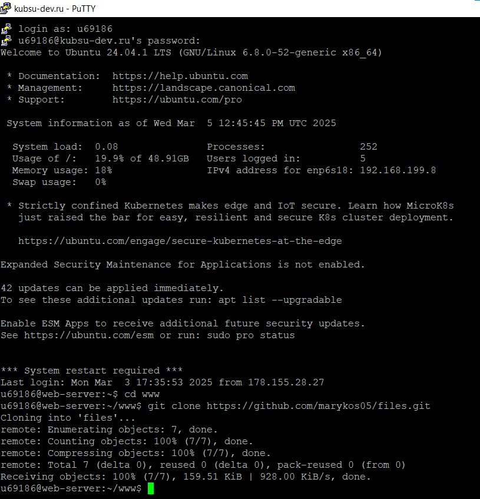
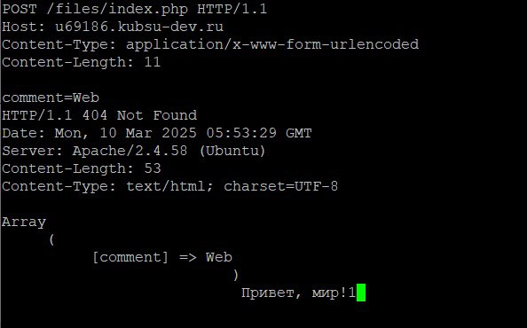

Telnet — это сетевой протокол для удалённого доступа и управления сервером или устройством через текстовый интерфейс.
1. Заливка разархивированных файлов каталога files на GitHub:
И на учебный веб-сервер с помощью команды git clone в Putty:

Теперь эти файлы открываются по ссылке: http://u69186.kubsu-dev.ru/files/

Файл index.php работает корректно, выводя массив, который будет содержать комментарий из задания 5 (но только в протоколе telnet, не на этом учебном сервере), передаваемый методом POST; сообщение "Привет, мир!" и обозначение 1, что скрипт сработал, а память очистилась.
2. Подключение к telnet через Putty:
Для подключения использовали порт 80, host нашего личного учебного сервера и тип запроса raw (данные любого типа без изменений).
Для удобства и сохранения синтаксиса, нужно заранее прописывать запросы в текстовом редакторе и вставлять через буфер обмена.
3. Получение главной страницы методом GET в протоколе HTTP 1.0:
В ответ выводится:
- HTTP/1.1 200 OK - запрос был успешным, и сервер готов ответить.
- Date: Wed, 05 Mar 2025 14:24:32 GMT - дата и время, когда был сгенерирован ответ.
- Server: Apache/2.4.58 (Ubuntu) - сервер использует Apache версии 2.4.58 на операционной системе Ubuntu.
- Content-Length: 6 - длина тела ответа в байтах, в данном случае 6.
- Connection: close - соединение будет закрыто после этого ответа.
- Content-Type: text/html; charset=UTF-8 - содержимое является HTML-документом и использует кодировку UTF-8.
- Hello! - текст, который представляет тело ответа.
Сервер успешно обработал запрос и вернул HTML-документ, содержащий строку "Hello!" с соответствующей информацией о содержимом и кодировке.
4. Получение внутренней страницы методом GET в протоколе HTTP 1.1:

В ответ сервер выводит почти то же самое, что и в протоколе HTTP 1.0, кроме закрытого соединения. Этим он и отличается: в HTTP 1.0 каждое соединение устанавливается для одного запроса и закрывается сразу после получения ответа, а в HTTP 1.1 поддерживаются постоянные соединения, что позволяет использовать одно соединение для нескольких запросов.
5. Определение размера файла file.tar.gz = 11335 bytes методом HEAD в протоколе HTTP 1.1, не скачивая его:
В ответ сервер также выводит:
- Last-Modified: Wed, 05 Mar 2025 12:47:05 GMT - когда ресурс в последний раз изменялся.
- ETag: "2c47-62f97c9624b52" - уникальный идентификатор версии ресурса, используемый для кэширования.
- Accept-Ranges: bytes - сервер поддерживает запрашивание частей ресурса (например, при загрузке файлов).
- Content-Type: application/x-gzip - содержимое является сжатым файлом в формате Gzip.
6. Определение медиатипа ресурса /image.png = image/png методом HEAD в протоколе HTTP 1.1:
В ответ сервер вывел тип ресурса image/png, также его уникальный идентификатор и общий размер 10506 bytes, все остальное без изменений.
7. Отправление комментария на сервер по адресу /index.php методом POST в протоколе HTTP 1.1:

Для отправления комментария необходимо помимо метода POST прописать в заголовке также тип контента application/x-www-form-urlencoded (содержимое закодировано в виде формы) и длину тела содержимого, включая comment=.
В ответ сервер выводит:
- HTTP/1.1 404 Not Found - запрашиваемый ресурс не найден на сервере. Так происходит, потому что в файле index.php прописано изменение заголовка на HTTP/1.1 404 Not Found при обращении к нему.
- Content-Type: text/html; charset=UTF-8 - содержимое является HTML-документом и использует кодировку UTF-8.
- Content-Length: 53 - длина тела содержимого 53.
- В массиве Array передается наш комментарий.
8. Получение первых 100 байт файла /file.tar.gz методом GET в протоколе HTTP 1.1
Для этого прописываем заголовок запроса Range и необходимое количество передаваемых файлов от учебного сервера 0-99.
В ответ сервер выводит:
- HTTP/1.1 206 Partial Content - запрос был успешен, и возвращается часть содержимого.
- Content-Length: 100 - длина возвращаемого содержимого в байтах.
- Content-Range: bytes 0-99/11335 - возвращается диапазон байтов с 0 по 99 из общего объема 11335 байтов.
- Содержимое файла file.tar.gz.
9. Определение кодировки ресурса /index.php - UTF-8 методом HEAD в протоколе HTTP 1.1:
На скрине видим, что кодировка ресурса charset = UTF-8, также index.php снова изменил нам заголовок на 404 Not Found.